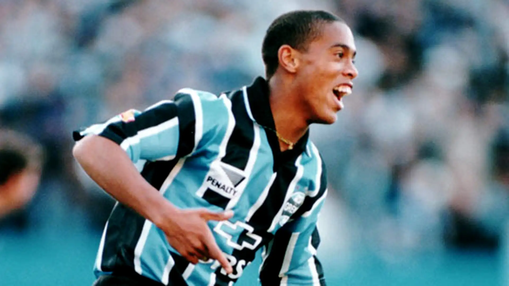
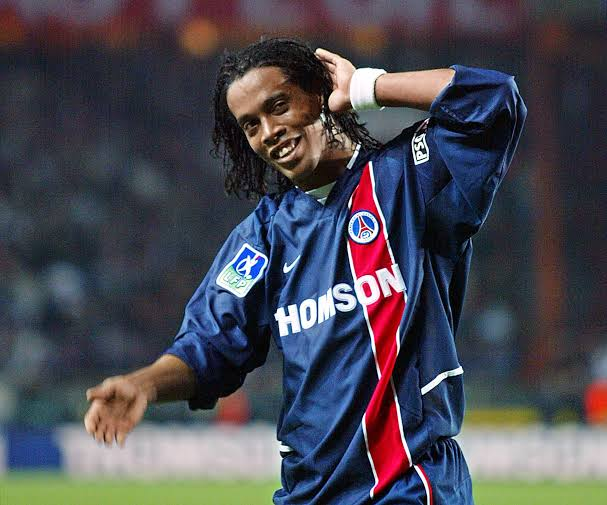
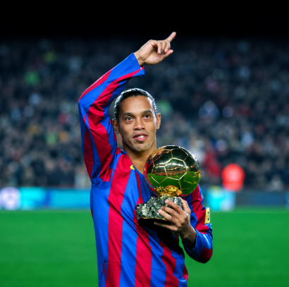
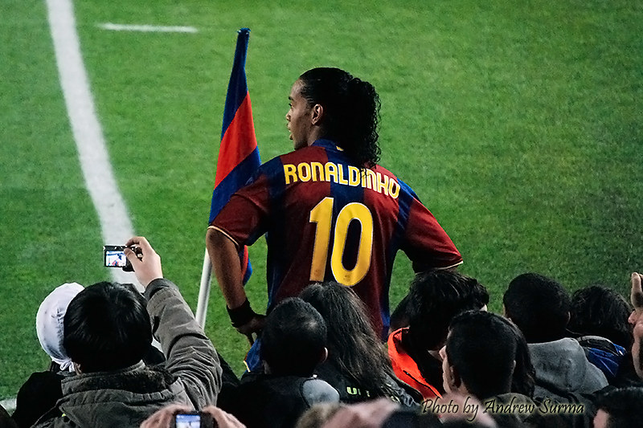
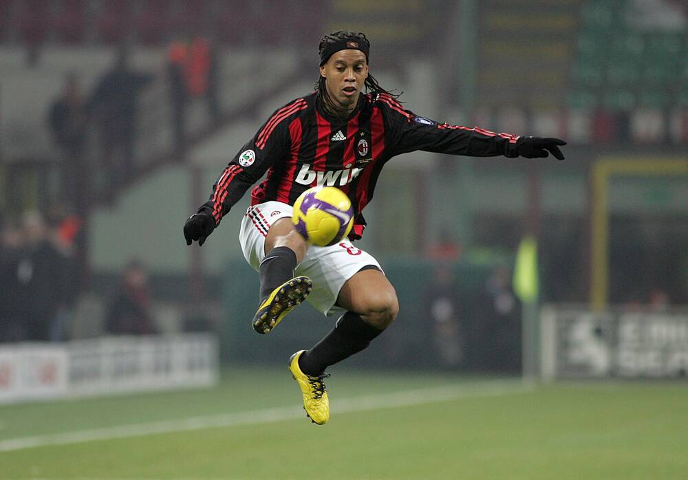
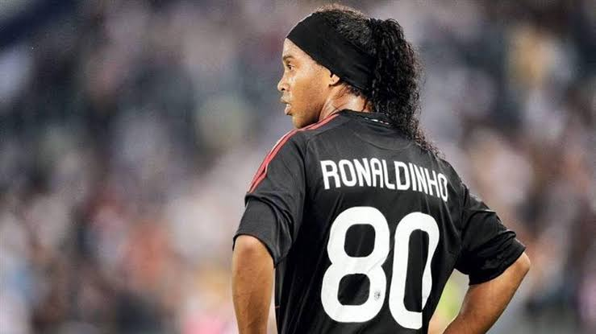

L'éclosion au Grêmio et un transfert rocambolesque

Débuts professionnels (1998–2001) : Formé à Porto Alegre, le jeune prodige brésilien explose rapidement et s'impose comme l'un des plus grands espoirs du football mondial. En décembre 2000, il signe en secret un pré-contrat de cinq ans avec le PSG en profitant de sa fin de contrat (loi Pelé). Furieux de voir sa pépite partir libre, le Grêmio conteste l'opération devant la FIFA. Le joueur reste bloqué sans jouer pendant plusieurs mois avant qu'un accord financier (environ 4,8 M€) ne valide officiellement son arrivée à l'été 2001.
Deux saisons magiques mais électriques au PSG (2001–2003)

Des coups d'éclat mémorables : Pour sa première expérience en Europe, il illumine le Parc des Princes par ses dribbles et sa créativité. Il brille particulièrement lors des grands rendez-vous, notamment face à l'Olympique de Marseille (doublé au Vélodrome en mars 2003 et performance historique au Parc en octobre 2002) ou en Coupe de France contre Guingamp. Tensions avec Luis Fernandez : Son passage est marqué par une relation conflictuelle avec son entraîneur, Luis Fernandez, qui lui reproche son manque de rigueur à l'entraînement et ses sorties nocturnes. Devenu champion du monde avec le Brésil à l'été 2002, il est régulièrement laissé sur le banc. Départ vers Barcelone : À l'été 2003, après un échec collectif en championnat (11e place) et sans trophée majeur en club (hors Coupe Intertoto 2001), il quitte Paris pour rejoindre le FC Barcelone où il atteindra les sommets mondiaux.
Le sauveur du Barça et la consécration mondiale (2003–2006)

Arrivée et impact immédiat : Recruté à l'été 2003 pour 30 millions d'euros, il redonne immédiatement le sourire au Camp Nou sous les ordres de Frank Rijkaard. Dès ses débuts, il marque les esprits par des buts spectaculaires et son style spectaculaire (Joga Bonito). Le sommet individuel : Il est élu Joueur FIFA de l'année en 2004 et 2005, puis remporte le Ballon d'Or en 2005. En novembre 2005, il reçoit même une standing ovation du stade Santiago-Bernabéu après un doublé d'anthologie lors d'un Clásico remporté 3-0 face au Real Madrid. Le doublé historique de 2006 : Après un premier titre de champion d'Espagne en 2005, il mène le Barça vers un doublé Liga – Ligue des champions lors de la saison 2005–2006 (victoire 2-1 en finale à Paris contre Arsenal), mettant fin à 14 ans d'attente européenne pour le club. Il joue également un rôle de mentor auprès d'un jeune prodige : Lionel Messi.
Le déclin progressif et le passage de témoin (2006–2008)

Essoufflement et blessures : Après la Coupe du monde 2006 ratée avec le Brésil, son hygiène de vie, ses sorties nocturnes et des blessures à répétition pèsent sur sa condition physique. Malgré une saison 2006–2007 prolifique sur le plan personnel (21 buts en Liga), le Barça termine sans titre majeur. Fin de cycle : Lors de la saison 2007–2008, il perd progressivement sa place de titulaire. À l'été 2008, l'arrivée de Pep Guardiola sur le banc scelle son départ : il est transféré à l'AC Milan pour plus de 21 millions d'euros, laissant le numéro 10 à Lionel Messi.
Arrivée prestigieuse et débuts en demi-teinte (2008–2009)

Le numéro 80 : Transféré du FC Barcelone pour 21 millions d'euros (plus 4 M€ de bonus) en juillet 2008, il ne peut récupérer le numéro 10 détenu par Clarence Seedorf et opte pour le numéro 80, son année de naissance. Premiers éclats puis irrégularité : Sous les ordres de Carlo Ancelotti, il démarre fort en offrant la victoire lors du derby face à l'Inter Milan (1-0) d'un coup de tête en septembre 2008. Cependant, son manque de rythme et la concurrence de Kaká le relèguent progressivement sur le banc en seconde partie de saison.
La renaissance sous Leonardo (2009–2010)

Patron technique : À l'été 2009, le départ de Kaká au Real Madrid et l'arrivée de son compatriote Leonardo sur le banc milanais relancent complètement Ronaldinho. Positionné sur le côté gauche avec une grande liberté offensive, il retrouve sa joie de jouer et sa magie. Saison pleine : Il signe plusieurs performances de très haut niveau, dont un doublé face à la Juventus (3-0) et un triplé contre Sienne (4-0). Il termine meilleur passeur de Serie A avec 18 passes décisives (et 15 buts toutes compétitions confondues), mais n'est pas retenu par Dunga pour la Coupe du monde 2010.
Fin de cycle et titre de champion d'Italie (2010–2011)

Concurrence accrue : L'arrivée du nouvel entraîneur Massimiliano Allegri et les recrutements de Zlatan Ibrahimović et Robinho à l'été 2010 réduisent considérablement son temps de jeu. Départ vers Flamengo : À six mois de la fin de son contrat, il quitte l'AC Milan en janvier 2011 pour rentrer au Brésil et signer à Flamengo. Ayant disputé la première moitié de la saison (11 matchs de Serie A), il est officiellement crédité du titre de champion d'Italie (Scudetto) 2011 remporté par le club en mai.